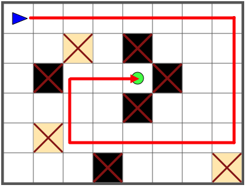
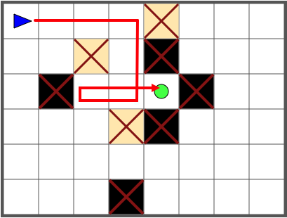
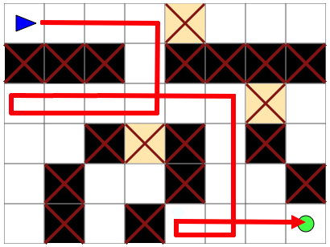
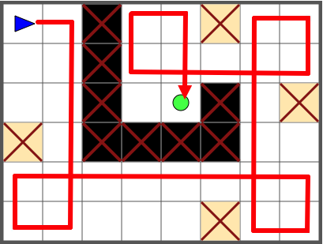
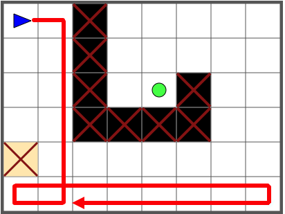

Le robot bleu avance s'il n'a pas d'obstacle devant lui. Sinon, il tourne d'un quart de tour à droite.
Cliquez pour ajouter des obstacles, afin que le robot atteigne le rond vert.
Voici deux solutions possibles. Des variantes fonctionnent également.
|  |  |
Voici une solution possible. Des variantes fonctionnent également.

Voici la solution.

Le robot ne sait que tourner vers la droite. Il n'est donc pas facile de le faire tourner vers la gauche. C'est pourtant ce qu'on a besoin de faire à certains points de son parcours. La solution est alors de lui faire faire un tour complet sur lui-même, en l'obligeant à tourner 3 fois sur sa droite.
Pour cela, dans cet exemple, on doit placer un bloc forçant le robot à tourner trois fois sur lui-même. Cependant, cela ne suffit pas, il faut aussi placer ce bloc de telle sorte que le robot fasse un demi tour assez ample pour ne pas être bloqué au tournant suivant. Ainsi, dans la solution ci-dessous le robot va bien vers sa gauche en bas, mais ensuite son chemin est trop près du mur : on ne pourra pas poser d'autre bloc pour lui faire changer de direction et le faire remonter vers le haut.

Il n'y a donc qu'une seule solution : suivre la stratégie illustrée sur l'image la première image.
Dans ce sujet, on pouvait simuler l'exécution d'un programme dans sa tête, afin d'éviter de perdre du temps à exécuter le programme de nombreuses fois.
Arriver à imaginer les étapes qui vont être effectuées est très utile en général pour un programmeur.